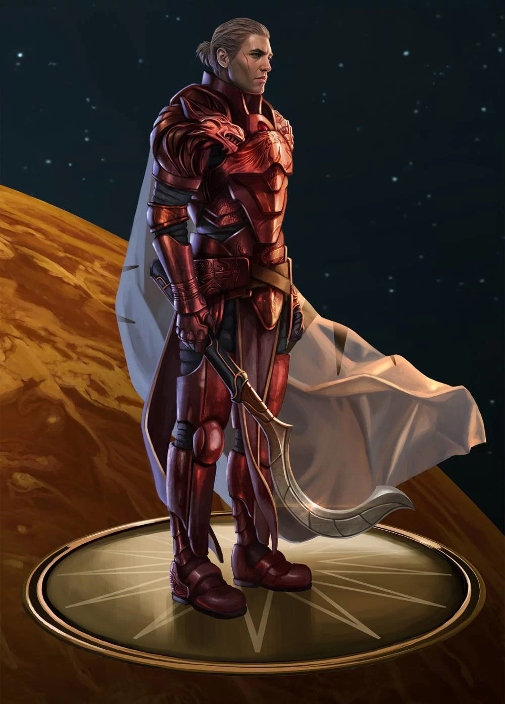

Red rising är den första boken i en sci-fi trilogi om den före detta slaven Darrow au andromeda (orginalt Darrow av Lykos). Berättelsen handlar om hur Darrows liv slås i spillror när hans fru avrättas av "förbundet", som leder mänskligheten. Han blir så förkrossad att han själv går emot förbundet och därmed avrättas han med. ett par timmar efter hans begravninng visar det sig att han egentligen drogades av sin farbror för att verka död, vilket slutar att han blir upphämtad av rebeller som hans frabror sammarbetar med. Efter detta följer en historia om hämnd och hjältemod där Darrow plastikopereras för att se ut som en av "de gyllene", som leder förbundet, och sedan skickas till en livsfarlig akademi där de unga gyllene tränas i strid och ledarskap.
